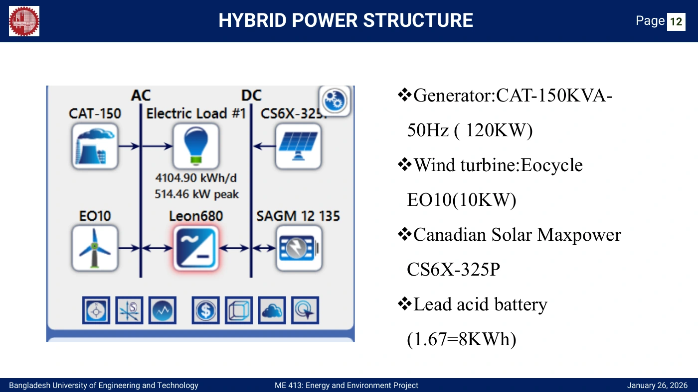
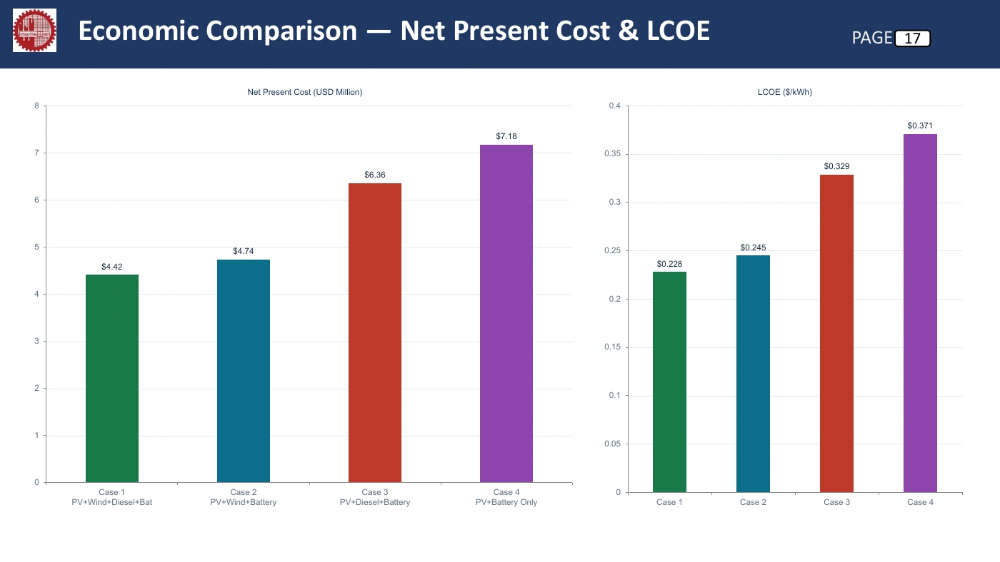

A Cost-Effective Standalone Hybrid Renewable Microgrid for Island Electrification
Saint Martin’s Island, Bangladesh · November 2025 – May 2026
Project Overview
Geographic isolation makes mainland grid extension difficult and leaves island communities dependent on diesel generation. This study models a standalone hybrid supply for a community on Saint Martin’s Island.
The objective was to identify a cost-effective mix of solar PV, wind, battery storage, and diesel backup while examining renewable penetration and storage requirements. This is a simulation-based design study; no physical microgrid was constructed.
Hybrid System Design
PV and battery storage connect to the DC bus; wind turbines, diesel backup, and the electrical load connect to the AC bus. A bidirectional converter links the two buses.

Selected configuration: 1,849 kW PV, 29 Eocycle EO10 wind turbines (approximately 290 kW), 120 kW diesel backup, 3,160 lead-acid battery units, and a 449 kW converter.
Methodology
- Assess resources and demand. Hourly solar radiation, wind speed, and temperature inputs are listed alongside component costs and fuel-price assumptions. The model uses 4,104.9 kWh/day demand, a 514 kW peak, and a 0.33 load factor.
- Simulate in HOMER Pro. Evaluate PV, wind, diesel, storage, and converter combinations against the estimated island load.
- Compare and optimize. Rank the reported configurations by net present cost (NPC) and levelized cost of electricity (LCOE), alongside renewable fraction and fuel use.
The presentation lists NASA POWER / ERA5 / PVGIS for meteorological inputs and literature-based cost and demand sources. Its methodology diagram also proposes OptiCE/MILP; the numerical results presented here are explicitly reported as HOMER Pro outputs.
Optimization Results
The four-source hybrid achieved the lowest NPC and LCOE among the four evaluated configurations.
| Configuration | NPC | LCOE $/kWh | Renewable fraction | Diesel L/year |
|---|---|---|---|---|
| PV + wind + diesel + battery | $4.42M | $0.228 | 99.8% | 931 |
| PV + wind + battery | $4.74M | $0.245 | 100% | 0 |
| PV + diesel + battery | $6.36M | $0.329 | 99.8% | 975 |
| PV + battery | $7.18M | $0.371 | 100% | 0 |

Key Findings
- Renewable fraction
- 99.8%
- Net present cost
- $4.42M
- Levelized electricity cost
- $0.228/kWh
- Annual diesel consumption
- 931 L/year
Removing wind increased NPC by approximately 44%. The fully renewable PV–wind–battery case cost $320,000 more in NPC than the selected hybrid. The PV–battery-only case required 9,226 battery units, compared with 3,160 in the selected system.
Reported model outputs from presentation slides 16–19; not measured operating performance.
Conclusion and Future Scope
Under the study assumptions, complementary solar and wind generation with battery storage and limited diesel backup offered the most economical configuration, delivering a near-complete renewable supply.
Further work could test sensitivity to fuel prices, component costs, demand growth, and resource variability, and quantify emissions and dispatch-strategy differences. These are extensions for future evaluation, not completed results.